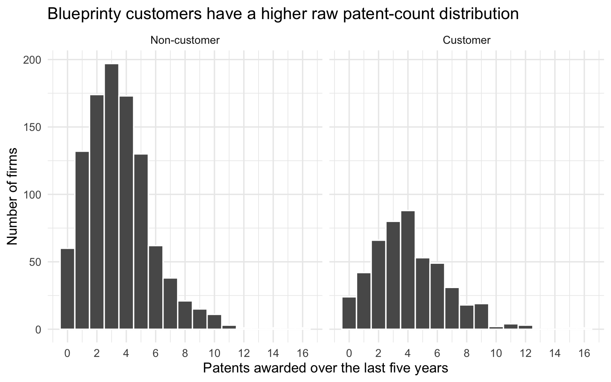
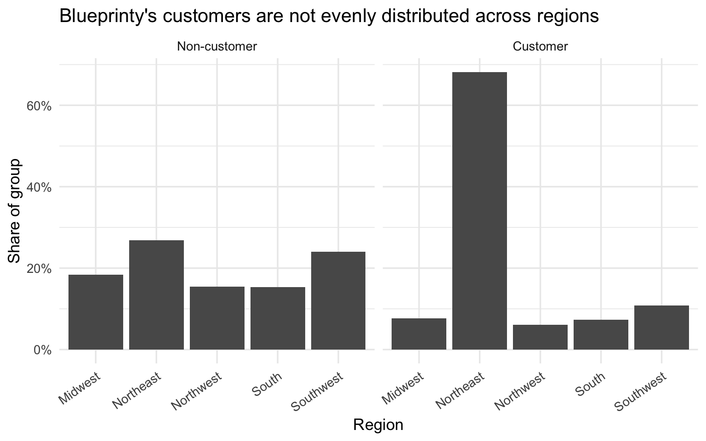
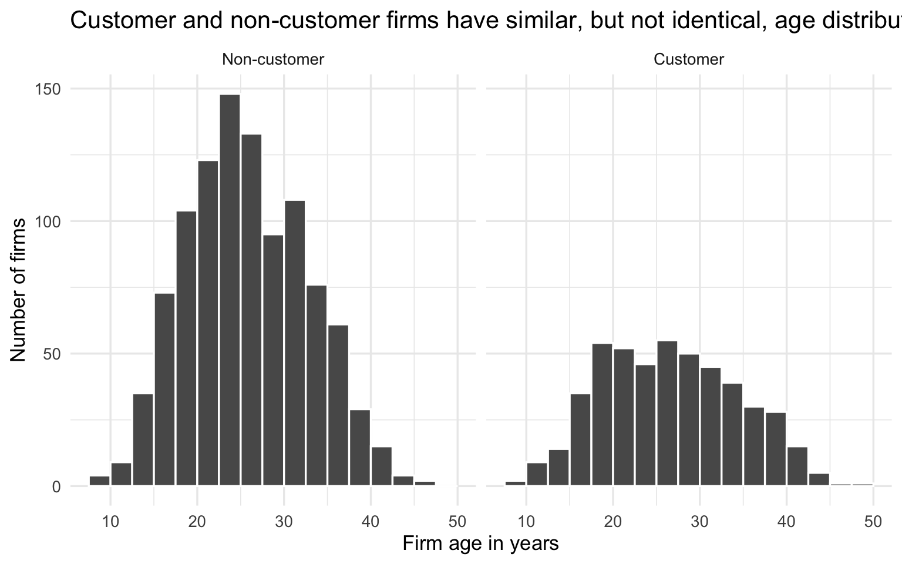
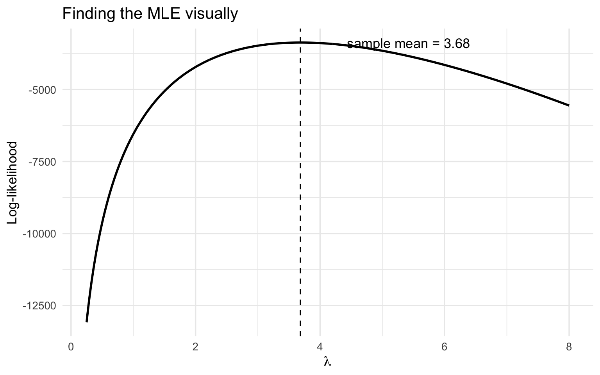

| Firms | Customers | Non-customers | Mean patents | Median patents | Minimum patents | Maximum patents | Mean age | Regions |
|---|---|---|---|---|---|---|---|---|
| 1500 | 481 | 1019 | 3.68 | 3.00 | 0 | 16 | 26.36 | 5 |
Does Blueprinty’s Software Help Firms Win More Patents?
Poisson Regression and Maximum Likelihood Estimation
1 Introduction
Blueprinty makes specialized software that helps engineering firms prepare blueprints for patent applications. The company’s marketing team would like to claim that firms using Blueprinty’s software are more successful in getting patents approved. That is an attractive business claim, but it is also a difficult statistical claim because customers are not randomly assigned to use the software.
The ideal study would observe the same firms before and after adopting Blueprinty, or randomly assign comparable firms to use or not use the software. Instead, the available data are observational: 1,500 mature engineering firms, each with its number of patents awarded over the last five years, its region, its age since incorporation, and whether it is a Blueprinty customer.
This means a simple comparison of customer and non-customer patent counts is not enough. Blueprinty’s customers may differ systematically from other firms. For example, they may be older, concentrated in particular regions, or otherwise more patent-oriented even before using the software. The goal of this report is therefore to move from a raw comparison to a Poisson regression model that adjusts for observed differences in firm age and region.
2 Exploring the Data
The dataset contains 1500 firms. About 32.1% of them are Blueprinty customers, and the average firm in the full sample received 3.68 patents over the last five years.
2.1 Patent counts by customer status

| Group | Firms | Mean patents | Median patents | SD |
|---|---|---|---|---|
| Non-customer | 1019 | 3.47 | 3.00 | 2.23 |
| Customer | 481 | 4.13 | 4.00 | 2.55 |
Customers average 4.13 patents, compared with 3.47 for non-customers. The raw difference is therefore about 0.66 patents over five years. The customer distribution is shifted to the right, but both groups are still count data with a long right tail: most firms receive a modest number of patents, while a small number receive many.
This raw difference is suggestive, not causal. Customers may have higher patent counts because of the software, but they may also be firms that were already more active in patenting.
2.2 Region by customer status

| Region | Firms | Share |
|---|---|---|
| Non-customer | ||
| Northeast | 273 | 26.8% |
| Southwest | 245 | 24.0% |
| Midwest | 187 | 18.4% |
| Northwest | 158 | 15.5% |
| South | 156 | 15.3% |
| Customer | ||
| Northeast | 328 | 68.2% |
| Southwest | 52 | 10.8% |
| Midwest | 37 | 7.7% |
| South | 35 | 7.3% |
| Northwest | 29 | 6.0% |
The regional mix is clearly different across the two groups. In particular, customers are much more concentrated in the Northeast than non-customers. This matters because patenting may vary by region because of differences in industry clusters, legal resources, labor markets, or proximity to research institutions. If a region is both more likely to contain Blueprinty customers and more likely to produce patents, failing to control for region would exaggerate the apparent software effect.
2.3 Firm age by customer status

| Group | Mean age | Median age | SD |
|---|---|---|---|
| Non-customer | 26.10 | 25.50 | 6.95 |
| Customer | 26.90 | 26.50 | 7.81 |
Customers are slightly older on average: 26.9 years versus 26.1 years for non-customers. The difference is not huge, but age is still important. Older firms may have more engineers, deeper patent portfolios, more experience with patent applications, or more stable R&D processes. The regression model below therefore allows patent rates to vary flexibly with age.
3 A Simple Poisson Model via Maximum Likelihood
The outcome variable is a count: the number of patents a firm was awarded over a five-year period. Counts are non-negative integers, so an ordinary Normal model is not a natural starting point. A Normal model can assign probability to impossible values, such as negative patent counts or fractional patents. The Poisson distribution is a standard first model for non-negative integer outcomes.
For a single observation,
\[ Y_i \sim \text{Poisson}(\lambda), \]
where \(\lambda > 0\) is both the expected value and the variance of the distribution. The probability mass function is
\[ f(Y_i \mid \lambda) = \frac{e^{-\lambda}\lambda^{Y_i}}{Y_i!}. \]
Assuming the observations are independent and identically distributed, the joint likelihood for \(n\) firms is the product of the individual probabilities:
\[ L(\lambda \mid Y_1, \ldots, Y_n) = \prod_{i=1}^n \frac{e^{-\lambda}\lambda^{Y_i}}{Y_i!}. \]
This can be simplified as
\[ L(\lambda \mid Y) = e^{-n\lambda}\lambda^{\sum_i Y_i}\prod_{i=1}^n \frac{1}{Y_i!}. \]
Taking logs gives the log-likelihood:
\[ \ell(\lambda \mid Y) = \sum_{i=1}^n \left[-\lambda + Y_i\log(\lambda) - \log(Y_i!)\right]. \]
The log form is easier to compute and optimize because products become sums. It is also less prone to numerical underflow.
Code
# The simple Poisson log-likelihood as a function of lambda and the observed Y.
poisson_loglikelihood <- function(lambda, Y) {
if (lambda <= 0) return(-Inf)
sum(dpois(Y, lambda = lambda, log = TRUE))
}
Y <- blueprinty$patents
lambda_grid <- tibble(lambda = seq(0.25, 8, length.out = 500)) |>
mutate(log_likelihood = map_dbl(lambda, poisson_loglikelihood, Y = Y))Code
ggplot(lambda_grid, aes(x = lambda, y = log_likelihood)) +
geom_line(linewidth = 1) +
geom_vline(xintercept = mean(Y), linetype = "dashed") +
annotate(
"text",
x = mean(Y) + 0.75,
y = max(lambda_grid$log_likelihood) - 10,
label = glue("sample mean = {round(mean(Y), 2)}"),
hjust = 0
) +
labs(
title = "Finding the MLE visually",
x = expression(lambda),
y = "Log-likelihood"
) +
theme_minimal(base_size = 13)
The peak of the curve is the maximum likelihood estimate. Visually, the curve reaches its maximum at about 3.68, which is also the sample mean of patent counts.
We can see the same result analytically. Starting from
\[ \ell(\lambda) = \sum_{i=1}^n \left[-\lambda + Y_i\log(\lambda) - \log(Y_i!)\right], \]
the first derivative is
\[ \frac{\partial \ell}{\partial \lambda} = \sum_{i=1}^n \left[-1 + \frac{Y_i}{\lambda}\right] = -n + \frac{\sum_i Y_i}{\lambda}. \]
Setting the derivative equal to zero gives
\[ -n + \frac{\sum_i Y_i}{\lambda} = 0 \qquad \Rightarrow \qquad \hat{\lambda}_{MLE} = \frac{1}{n}\sum_{i=1}^n Y_i = \bar{Y}. \]
This result feels intuitive because the mean of a Poisson distribution is \(\lambda\).
Code
# Optimizing over log(lambda) guarantees lambda is positive.
simple_mle <- optim(
par = log(mean(Y)),
fn = function(log_lambda) -poisson_loglikelihood(exp(log_lambda), Y),
method = "BFGS"
)
simple_results <- tibble(
quantity = c("Numerical MLE", "Sample mean"),
value = c(exp(simple_mle$par), mean(Y))
)
simple_results |>
gt() |>
fmt_number(columns = value, decimals = 4) |>
cols_label(quantity = "Quantity", value = "Value")| Quantity | Value |
|---|---|
| Numerical MLE | 3.6847 |
| Sample mean | 3.6847 |
The numerical optimizer and the sample mean are nearly identical because, for a one-parameter Poisson model, the MLE is exactly the sample mean.
4 Poisson Regression
The simple model assumes every firm has the same patent rate \(\lambda\). That is too restrictive for this application because firms differ by age, region, and Blueprinty customer status. The regression version of the model allows each firm to have its own expected patent count:
\[ Y_i \sim \text{Poisson}(\lambda_i), \qquad \lambda_i = \exp(X_i'\beta). \]
The exponential function is important. The linear index \(X_i'\beta\) can be any real number, but \(\lambda_i\) must be positive. Exponentiating the index maps any real value into the positive real line.
The log-likelihood is now
\[ \ell(\beta \mid Y, X) = \sum_{i=1}^n \left[Y_i X_i'\beta - \exp(X_i'\beta) - \log(Y_i!)\right]. \]
The design matrix \(X\) includes an intercept, firm age, squared firm age, region indicators, and the customer indicator. I center age before squaring it, which makes the numerical optimization more stable while estimating the same kind of flexible quadratic age relationship. One region must be omitted as the reference category; otherwise, the intercept and the full set of region dummies would be perfectly collinear.
Code
# Poisson regression log-likelihood as a function of beta, Y, and X.
poisson_regression_loglikelihood <- function(beta, Y, X) {
eta <- as.vector(X %*% beta)
lambda <- exp(eta)
sum(Y * eta - lambda - lfactorial(Y))
}
neg_poisson_regression_loglikelihood <- function(beta, Y, X) {
-poisson_regression_loglikelihood(beta, Y, X)
}
# Build the design matrix. Midwest is the omitted reference region because it is
# the first level alphabetically in this dataset.
X <- model.matrix(
~ age_c + age_c_sq + region + iscustomer,
data = blueprinty
)
Y <- blueprinty$patentsCode
start <- rep(0, ncol(X))
start[1] <- log(mean(Y))
mle_fit <- optim(
par = start,
fn = neg_poisson_regression_loglikelihood,
Y = Y,
X = X,
method = "BFGS",
hessian = TRUE,
control = list(maxit = 10000)
)
# A robust fallback for unusual numerical behavior: if the direct optimization
# has trouble, restart at the GLM solution and request the Hessian there.
glm_fit <- glm(
patents ~ age_c + age_c_sq + region + iscustomer,
data = blueprinty,
family = poisson(link = "log")
)
if (mle_fit$convergence != 0) {
mle_fit <- optim(
par = coef(glm_fit),
fn = neg_poisson_regression_loglikelihood,
Y = Y,
X = X,
method = "BFGS",
hessian = TRUE,
control = list(maxit = 10000)
)
}
beta_hat <- mle_fit$par
names(beta_hat) <- colnames(X)
# Since we minimized the negative log-likelihood, the covariance matrix is the
# inverse Hessian of the negative log-likelihood. This is equivalent to the
# negative inverse Hessian of the maximized log-likelihood.
vcov_mle <- solve(mle_fit$hessian)
se_mle <- sqrt(diag(vcov_mle))| Term | Coefficient | Std. error | Rate ratio, exp(coef.) |
|---|---|---|---|
| Intercept | 1.3461 | 0.0383 | 3.8425 |
| Age, centered | −0.0079 | 0.0021 | 0.9922 |
| Age squared, centered | −0.0030 | 0.0003 | 0.9970 |
| Region: Northeast | 0.0289 | 0.0436 | 1.0293 |
| Region: Northwest | −0.0180 | 0.0538 | 0.9822 |
| Region: South | 0.0572 | 0.0526 | 1.0588 |
| Region: Southwest | 0.0502 | 0.0472 | 1.0515 |
| Blueprinty customer | 0.2079 | 0.0309 | 1.2310 |
| Term | Direct MLE | glm() estimate | Absolute difference |
|---|---|---|---|
| Intercept | 1.346127 | 1.344676 | 0.001451 |
| Age, centered | −0.007867 | −0.007970 | 0.000103 |
| Age squared, centered | −0.002984 | −0.002970 | 0.000013 |
| Region: Northeast | 0.028902 | 0.029170 | 0.000268 |
| Region: Northwest | −0.017998 | −0.017575 | 0.000423 |
| Region: South | 0.057179 | 0.056561 | 0.000618 |
| Region: Southwest | 0.050194 | 0.050576 | 0.000382 |
| Blueprinty customer | 0.207854 | 0.207591 | 0.000263 |
The direct maximum-likelihood estimates match the glm() estimates to numerical precision. The coefficient estimates should match because both procedures maximize the same Poisson log-likelihood. Small differences in standard errors can occur if the optimizer’s numerical Hessian differs slightly from the information matrix calculation used internally by glm().
The customer coefficient is positive. In this fitted model, the customer coefficient is approximately 0.208, so the rate ratio is \(\exp(0.208)\), or about 1.231. Holding age and region fixed, Blueprinty customers are estimated to have about 23.1% higher expected patent counts than otherwise similar non-customers.
The age terms show a curved relationship between firm age and patenting. The negative squared term means the predicted patent rate does not rise forever with age; instead, the model allows patenting to increase up to a point and then flatten or decline. The regional coefficients are smaller than the customer coefficient in this model, which suggests that the customer relationship is not merely an artifact of regional imbalance.
5 The Effect of Blueprinty’s Software
Poisson regression coefficients are on the log scale, so they are not directly measured in additional patents. To express the result in patent-count units, I construct two counterfactual datasets:
- \(X_0\): every firm is treated as a non-customer.
- \(X_1\): every firm is treated as a Blueprinty customer.
The firm’s observed age and region are held fixed in both counterfactuals. The only thing that changes is the customer indicator.
Code
X0 <- X
X1 <- X
X0[, "iscustomer"] <- 0
X1[, "iscustomer"] <- 1
predicted_y0 <- as.vector(exp(X0 %*% beta_hat))
predicted_y1 <- as.vector(exp(X1 %*% beta_hat))
average_effect <- mean(predicted_y1 - predicted_y0)
average_pred_noncustomer <- mean(predicted_y0)
average_pred_customer <- mean(predicted_y1)
rate_ratio_customer <- average_pred_customer / average_pred_noncustomer
counterfactual_table <- tibble(
quantity = c(
"Average predicted patents if all firms were non-customers",
"Average predicted patents if all firms were customers",
"Average difference: customer minus non-customer",
"Average rate ratio"
),
value = c(
average_pred_noncustomer,
average_pred_customer,
average_effect,
rate_ratio_customer
)
)
counterfactual_table |>
gt() |>
fmt_number(columns = value, decimals = 3) |>
cols_label(quantity = "Quantity", value = "Estimate")| Quantity | Estimate |
|---|---|
| Average predicted patents if all firms were non-customers | 3.439 |
| Average predicted patents if all firms were customers | 4.233 |
| Average difference: customer minus non-customer | 0.794 |
| Average rate ratio | 1.231 |
The estimated average effect is about 0.794 additional patents per firm over five years, holding each firm’s age and region fixed. The model predicts 3.439 patents per firm if every firm were a non-customer and 4.233 patents per firm if every firm were a customer.
This is a more useful business interpretation than the log coefficient alone. It says that, among firms with the age and region distribution observed in this dataset, Blueprinty customer status is associated with roughly 0.79 more patents over a five-year window.
6 Conclusion
The raw data show that Blueprinty customers receive more patents than non-customers: the unadjusted difference is about 0.66 patents over five years. Customers and non-customers also differ in their regional composition and, to a lesser extent, age. Those differences make the raw comparison insufficient.
After fitting a Poisson regression that adjusts for age, a quadratic age pattern, and region, Blueprinty customer status remains positively associated with patent counts. The fitted model estimates that customers have about 23.1% higher expected patent counts than comparable non-customers, corresponding to an average counterfactual difference of about 0.79 patents per firm over five years.
This evidence is consistent with Blueprinty’s marketing claim that its software is associated with greater patent success. However, the analysis does not prove that the software causes the improvement. The data are observational, and the model only adjusts for observed characteristics: age and region. Unobserved differences, such as R&D budgets, engineering quality, prior patent strategy, legal support, or management sophistication, could still partly explain the customer advantage. A stronger causal claim would require a randomized experiment, a before-and-after adoption design, or richer data that better measure firms’ underlying patenting capacity.